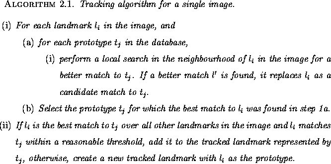
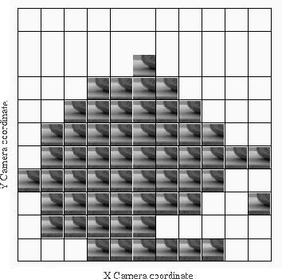

In order to describe the environment, images must be obtained from
representative viewpoints. For the purposes of this discussion, let
us assume that we select viewpoints that cover the configuration space
in a uniform grid. This is by no means a requirement or constraint,
but rather a simplifying assumption. In order to achieve
computational efficiency, viewpoints are selected such that the camera
is facing in a consistent orientation . Once the sample images have been acquired,
they are used to automatically learn a suitable set of tracked
landmarks for subsequent positioning.
. Once the sample images have been acquired,
they are used to automatically learn a suitable set of tracked
landmarks for subsequent positioning.
The set of tracked landmarks is initially defined by the set of single
candidate landmarks observed in a selected bootstrap image from
the database. These candidate landmarks, which become prototypes for
matching, are selected in this manner in order to guarantee uniqueness
- no two landmark candidates will overlap within the same
image . Matching is based on a minimisation of the
Euclidean distance between the principal components encodings of the
prototype and of the observed candidate landmarks in each image.
Typically, we select the initial bootstrap image to be the one that is
taken from a camera position closest to the centroid of all visited
camera positions. Given this initial set of prototypes, the candidate
landmarks in each of the remaining images are considered for inclusion
in one of the tracked landmarks. Consideration for inclusion in a set
is based on the following methodology:
. Matching is based on a minimisation of the
Euclidean distance between the principal components encodings of the
prototype and of the observed candidate landmarks in each image.
Typically, we select the initial bootstrap image to be the one that is
taken from a camera position closest to the centroid of all visited
camera positions. Given this initial set of prototypes, the candidate
landmarks in each of the remaining images are considered for inclusion
in one of the tracked landmarks. Consideration for inclusion in a set
is based on the following methodology:

The goal of this method is to grow landmark sets as much as possible
in configuration space so that a candidate landmark can be matched to
the correct target over a large portion of the space. The local
search in the neighbourhood of  is performed in order to counter
the effects of any instabilities in the underlying landmark detector.
Figure 4.3 shows a typical landmark set. Each thumbnail image
corresponds to the landmark as detected in the image taken at the
corresponding grid position in configuration space. Grid positions
with no corresponding thumbnail image indicate positions in the
configuration space where no landmark candidate was found that matched
the prototype. This can occur under three separate conditions: first,
no suitable landmark candidate was detected by the landmark detector;
second, a landmark candidate was detected but found a better match to
a different prototype in the local neighbourhood; or third, a landmark
candidate was detected but differed too greatly in appearance from the
prototype - that is, the distance in the subspace was greater than the
user-defined threshold.
is performed in order to counter
the effects of any instabilities in the underlying landmark detector.
Figure 4.3 shows a typical landmark set. Each thumbnail image
corresponds to the landmark as detected in the image taken at the
corresponding grid position in configuration space. Grid positions
with no corresponding thumbnail image indicate positions in the
configuration space where no landmark candidate was found that matched
the prototype. This can occur under three separate conditions: first,
no suitable landmark candidate was detected by the landmark detector;
second, a landmark candidate was detected but found a better match to
a different prototype in the local neighbourhood; or third, a landmark
candidate was detected but differed too greatly in appearance from the
prototype - that is, the distance in the subspace was greater than the
user-defined threshold.

Figure 4.3: A typical landmark set. Each
thumbnail corresponds to the landmark as detected in the image taken
at the corresponding grid position in camera space.
A tracked landmark is the essential modelling primitive that defines the ``map'' and which is used for subsequent correspondence and position estimation. It should be noted that the tracking method makes no assumptions regarding position within the image, which somewhat relaxes some constraints that could be imposed on the pose of the camera - landmarks can be matched regardless of their image position.